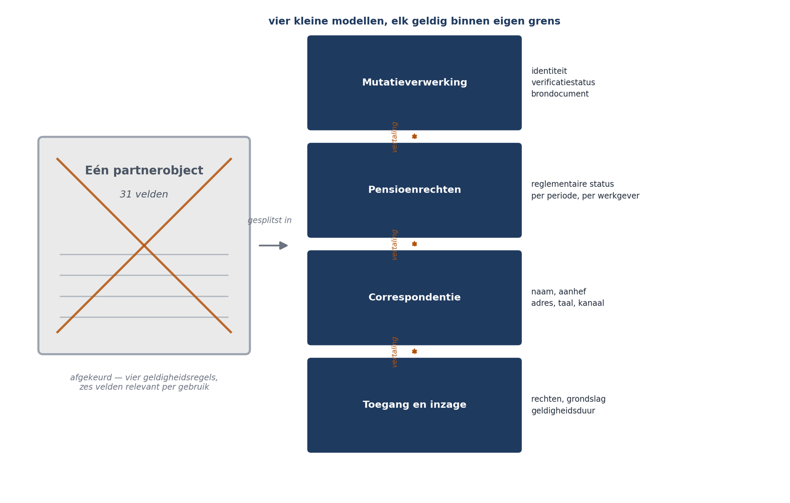

Deel 11 — Strategisch domeingedreven ontwerp
Slidedeck · 32 slides · dagdeel van 4 uur inclusief werksessie
Cursus Softwarearchitectuur · Niveau 2 (CPSA-A) · Deel 11 van 28
Slide 1 — titel
Strategisch domeingedreven ontwerp Niveau 2 · Deel 11 — Bounded contexts en context mapping Competentiegebied: methodisch
Slide 2 — bullets
Welkom bij niveau 2
- Advanced kent geen examen maar een modulelandschap: credit points in drie gebieden — Methodisch, Technologisch, Communicatief
- Afsluiting: een certificeringsopdracht plus een interview — dat is niveau 3
- Deze cursus is geen geaccrediteerde training en levert geen punten; zij levert de inhoudelijke voorbereiding
- Controleer het actuele modulelandschap op isaqb.org
Slide 3 — statement
Niveau 1 eindigde met een verdedigd ontwerp. Niveau 2 begint waar het bouwen begint. De vragen worden concreter — er is nu code die het antwoord moet dragen.
Slide 4 — sectie
Sprint 3
Slide 5 — bullets
Het team bouwde scheidingsmutaties en liep vast op één woord
- Mutatieverwerking: partner = iemand op een formulier, van wie gegevens gecontroleerd moeten worden
- Pensioenrechten: partner = wie op de peildatum aan de reglementaire definitie voldeed — per werkgever verschillend
- Correspondentie: partner = een geadresseerde met aanhef en taal
- Compliance: partner = iemand met inzagerechten op een dossierdeel
Slide 6 — statement
Na twee weken: één object, 31 velden. Per gebruik hooguit zes relevant. Vier geldigheidsregels. Drie definities van “actief”.
Slide 7 — statement
Dat is geen modelleerfout. Dat is de standaardfout.
Slide 8 — sectie
De bounded context
Slide 9 — bullets
Een grens waarbinnen een model eenduidig is
- Binnen de grens: één betekenis per begrip
- Buiten de grens: hetzelfde woord mag iets anders betekenen
- Het doel is niet één model voor de organisatie — het zijn meerdere modellen met heldere grenzen
Slide 10 — figuur

Slide 11 — bullets
De prijs is echt en hoort benoemd
- Vertaling op de grenzen; dezelfde persoon bestaat in vier vormen
- Dat is duplicatie — precies de duplicatie die deel 3 verdedigde
- Verschil met sprint 4 van Mutatie 1.0: deze is bewust, benoemd en van vertaling voorzien
Slide 12 — opdracht
Opdracht 11.1 — Ontleed het partnerobject
31 velden groeperen naar gebruik. Individueel, 25 minuten.
Let op partnerStatus, ingangsdatum en actief — en op de vier velden die niemand gebruikt.
Slide 13 — sectie
Ubiquitous language
Slide 14 — bullets
Wat de domeindeskundige zegt, staat in de code
- Niet vertaald, niet verbeterd, niet vereenvoudigd
- Deskundige zegt verevening → analist schrijft verdeling → ontwikkelaar maakt
SplitCalculation - Elke vertaalslag is een plek waar betekenis wegsijpelt
- Heet de code
verevening, dan kan een deskundige meelezen
Slide 15 — statement
Contextgrenzen kondigen zich aan als taalproblemen. Zodra iemand zegt “ja, maar in dat geval bedoelen we…”, staat u op een grens.
Slide 16 — opdracht
Opdracht 11.2 — Taalbreuken opsporen Vier gespreksverslagen. Minstens vijf woorden met dubbele betekenis. Duo’s, 25 minuten. Het aardigste is “verwerkt” — drie deskundigen, drie momenten.
Slide 17 — sectie
Subdomeinen Waar investeert u?
Slide 18 — tabel
Drie soorten, drie consequenties
| Soort | Betekenis | Doen |
|---|---|---|
| Kern | waar u zich onderscheidt | beste mensen, beste modellering |
| Ondersteunend | nodig, niet onderscheidend | pragmatisch bouwen of aanpassen |
| Generiek | iedereen heeft het | kopen |
Slide 19 — tabel
Voor het Mutatieplatform | Kern | mutatieverwerking · reglementaire rechtenbepaling | | Ondersteunend | werkgeversaanlevering · correspondentie | | Generiek | adresvalidatie · toegangsbeheer · berichtenverzending |
Slide 20 — statement
In Mutatie 1.0 ging capaciteit naar wat generiek was, terwijl het kerndomein nooit is gebouwd. Zelf bouwen wat u kon kopen, en niet bouwen wat uw vak is.
Slide 21 — bullets
De toets tegen “alles is kern” Als een concurrent dit precies zo doet — zijn wij dan minder onderscheidend?
- Adresvalidatie: nee
- Werkgeversaanlevering: nee, en dat verrast teams
- Reglementaire rechtenbepaling: ja
Slide 22 — opdracht
Opdracht 11.4 — Classificeer de subdomeinen Groepen van vier, 25 minuten. e) Toegangsbeheer is generiek — maar functiescheiding op dossierniveau niet. Wat doet u?
Slide 23 — sectie
De context map
Slide 24 — tabel
De patronen — techniek én machtsverhouding
| Patroon | Wie past zich aan |
|---|---|
| Partnership | beiden; samen slagen of falen |
| Customer–supplier | leverancier houdt rekening met afnemer |
| Conformist | afnemer neemt model over |
| Anticorruption layer | wij vertalen, zij niet |
| Open host service | wij publiceren, zij conformeren |
| Separate ways | geen integratie |
Slide 25 — figuur

Slide 26 — statement
Het contract uit deel 3: “een mutatie wordt uiteindelijk precies één keer doorgegeven.” Geen woord over SOAP. Dat wás een anticorruption layer — u kende de naam nog niet.
Slide 27 — bullets
Waarom die naam?
- Zonder vertaallaag sijpelen begrippen, veldnamen en eigenaardigheden van het pakket het domein binnen
- Na twee jaar is uw model een afgeleide van andermans pakket
- Dan raakt vervanging het hele systeem in plaats van één adapter
Slide 28 — opdracht
Opdracht 11.5 — Teken de context map Patronen benoemen, elk verdedigd met “wie past zich aan wie aan”. Groepen van vier, 35 minuten. e) Leg hem naast uw modulith-indeling. Vallen contexten en modules samen?
Slide 29 — statement
Nee — en dat is normaal. Een bounded context bevat één of meer modules. Een module hoort bij precies één context. Bedient een module er twee, dan hebt u een grens gemist.
Slide 30 — bullets
Grenzen vindt u in gesprekken, niet in gegevensmodellen
- Taalbreuken — de sterkste aanwijzing
- Verschillende belanghebbenden
- Verschillende verandersnelheden
- Autonome beslisbevoegdheid Níét: de bestaande systeemindeling, de database, of de huidige teamindeling
Slide 31 — bullets
Wanneer het niet loont
- Klein, eenvoudig domein met één betekenis per begrip
- Geen toegang tot domeindeskundigen — dan modelleert u vermoedens met precieze namen
- Generieke subdomeinen
- Wanneer de organisatie de discipline niet jaren volhoudt Dat laatste levert code op met domeinnamen die niet meer kloppen — misleidender dan neutrale namen
Slide 32 — bullets
Huiswerk en vooruitblik
- 11.7 — een begrip uit uw eigen organisatie in meerdere afdelingen; en: waar bouwt u wat u kon kopen?
- Deel 12: tactisch DDD — entiteiten, waardeobjecten, aggregaten — en hoe die de modulith uit deel 5 invullen
Ductus B.V. · Cursus Softwarearchitectuur · Niveau 2, deel 11 · Slidedeck